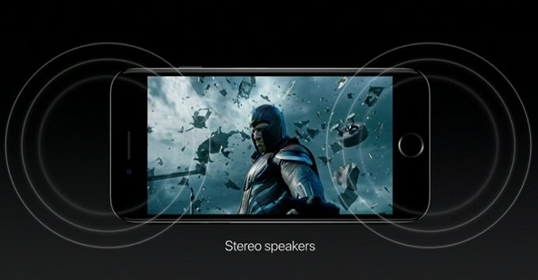
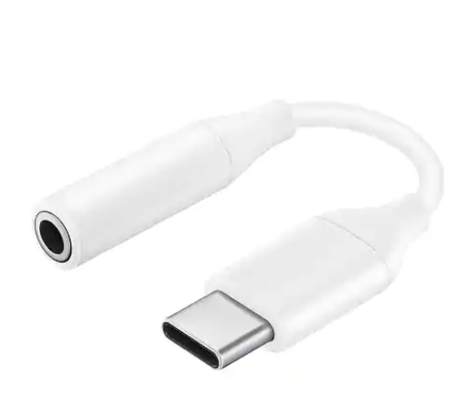

Dual speakers(Stereo)
If you have experienced or lived with a stereo-speaker phone even briefly, you know that adding extra audio channel can make your audio experience more immersive.
That’s because even users who prefer using headphones inevitably run into situations every now and then where they have to rely on the phone loudspeaker. In such situations when you are playing games, listening to music, or watching a movie on your phone screen with another person – stereo speakers make a significant difference.

3.5MM JACK
The audio jacks was invented in the 19th century for the purpose of use in telephone switchboards and still used widely to transfer analog audio signals.
Now-a-days 3.5mm is the universal audio jack size to be found in Smartphones, PC and Laptops.
Ever since Apple removed the 3.5-mm headphone jack from the iPhone in 2016, we've continued to see smartphone manufacturers removing the venerable port.
There are so many headlines these days about phones losing their 3.5 mm jacks.
With 3.5-mm headphone connector you can grab pretty much any pair of corded headphones. Plug in. Listen. No need to worry about whether they’re USB-C. No batteries to charge, no dongles to attach.
If you don't have 3.5-mm jack you need a Jack 3.5 mm- USB-C adapter or Type C headphones.
